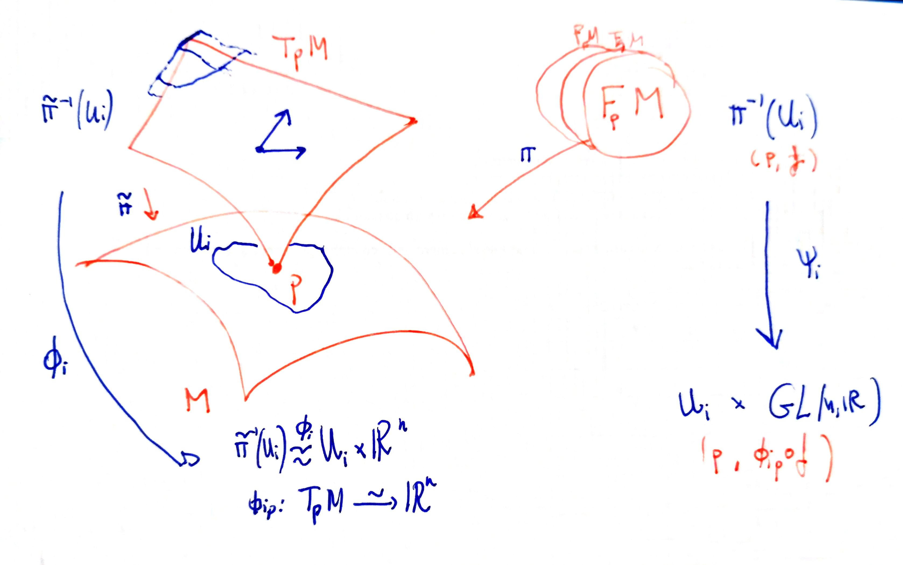

Let $M$ be an smooth manifold with tangent bundle $TM$. For every $p\in M$ we have the vector space $T_p M$, and we can consider the collection of all ordered basis of it. We will denote it $F_p M$. Observe that an ordered basis could be identified with a linear isomorphism $p:\mathbb{R}^n \mapsto T_p M$ (see note basis and change of basis).
Moreover, we have a natural action of $GL(n,\mathbb{R})$ into $F_p M$: for $f:\mathbb{R}^n \mapsto T_p M$ and $T\in GL(n,\mathbb{R})$ we obtain $f\circ T: \mathbb{R}^n \mapsto T_p M$. This action is free and transitive.
We define the frame bundle $FM$ as the set
$$ FM = \bigsqcup_ { p \in M } F _ { p } M $$together with the natural projection.
What are the trivializations? Observe the picture:

We give $\pi^{-1}(U_i)$ the topology induced for the $\{\Psi_i\}$, and give to $FM$ the final topology induced by the inclusions $\pi^{-1}(U_i)\subseteq FM$.
The frame bundle has a solder form that is natural. It is explained here
________________________________________
________________________________________
________________________________________
Author of the notes: Antonio J. Pan-Collantes
INDEX: